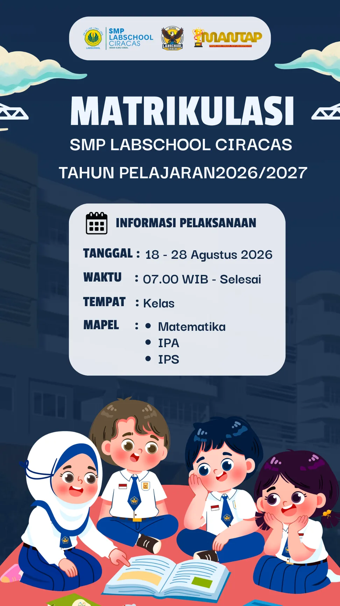

Program Matrikulasi Kelas VII
Penguatan materi esensial Matematika, IPA, dan IPS sebagai tindak lanjut tes diagnostik siswa baru.

Latar belakang
Setiap siswa baru datang dengan latar belakang dan kesiapan belajar yang berbeda. Dari 228 siswa yang mengikuti tes diagnostik, 71,74% memperoleh nilai Matematika di bawah 70, 76,32% pada IPA, dan 56,58% pada IPS. Sementara itu, nilai Bahasa Indonesia dan Bahasa Inggris sudah relatif baik.
| Mata pelajaran | Rata-rata satu angkatan | Rata-rata peserta matrikulasi |
|---|---|---|
| Matematika | 55,33 | 31,51 |
| IPA | 58 | 44,5 |
| IPS | 64,54 | 44,63 |
| Bahasa Indonesia | 80,85 | – |
| Bahasa Inggris | 82,07 | – |
Matrikulasi menjadi tindak lanjut nyata dari tes diagnostik, agar kesiapan belajar siswa lebih merata sebelum pembelajaran berjalan penuh.
Tujuan kegiatan
- Menyamakan pemahaman dan menguatkan kompetensi dasar pada materi esensial.
- Mengurangi kesenjangan kemampuan akademik awal antarsiswa.
- Membekali siswa dengan fondasi kompetensi yang kuat untuk jenjang SMP.
- Membantu siswa beradaptasi dengan pola, ritme, dan tuntutan akademik di sekolah baru.
- Meningkatkan kesiapan belajar, kepercayaan diri, dan motivasi siswa.
- Menjadi dasar bagi guru dalam merancang strategi dan pendampingan pembelajaran.
Jadwal dan materi
| Tanggal | Kelas 7A | Kelas 7B |
|---|---|---|
| Rabu, 19 Agustus | Matematika | IPA |
| Jumat, 21 Agustus | IPA | Matematika |
| Rabu, 26 Agustus | Matematika | IPA |
| Jumat, 28 Agustus | IPS | IPA |
| Rabu, 2 September | Post-test | Post-test |
Matematika
- KPK dan FPB
- Bangun ruang
- Operasi bilangan desimal
- Bangun datar
- Operasi pecahan
IPA
- Perkembangbiakan hewan
- Sifat dan wujud zat
- Simbiosis
- Perkembangbiakan tumbuhan
- Sistem pernapasan
- Sistem gerak manusia
IPS
- Kerajaan-kerajaan di Nusantara
- Masa penjajahan di Indonesia
- Proklamasi kemerdekaan
- Letak geografis dan batas wilayah
- Perubahan sosial
- Unsur-unsur peta
Hasil
| Mata pelajaran | Tes diagnostik | Post-test | Kenaikan |
|---|---|---|---|
| Matematika | 31,51 | 38,46 | +6,95 poin (22,06%) |
| IPA | 44,5 | 49,91 | +5,41 poin (12,16%) |
| IPS | 44,63 | 53,33 | +8,70 poin (19,49%) |
Ketiga mata pelajaran naik, dengan kenaikan terbesar pada IPS (poin) dan Matematika (persentase). Namun nilai post-test masih belum optimal, terutama Matematika, sehingga pendampingan perlu dilanjutkan selama semester berjalan sesuai kebutuhan tiap siswa.
Evaluasi
- Informasi pembagian siswa, guru pengajar, mata pelajaran, dan jadwal perlu disampaikan lebih jelas dan terstruktur.
- Sistem absensi siswa dan guru perlu dibuat lebih terstruktur dan praktis.
- Perlu grup komunikasi khusus antara guru pengajar dan peserta.
- Perubahan jadwal atau jam mulai perlu diinformasikan sebelum hari pelaksanaan.
Dokumentasi
